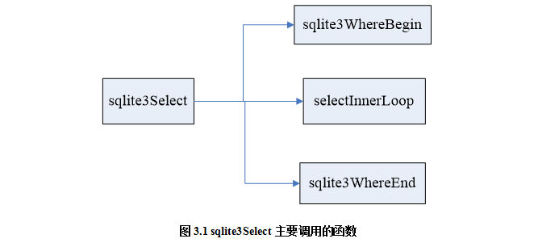

sqlite查询处理的关键函数
Sqlite的查询处理首先进行语法分析，语法分析最终在sqlite3SelectNew中完成；然后生成执行计划，select的执行计划在sqlite3Select中完成，该函数先对SQL语句进行语义分析，然后再进行优化，最后生成执行计划。
语法分析的主要任务就是对用户输入的SQL语句进行语法检查，然后生成一个包含所有信息的语法树。对于SELECT语句，这个语法树最终由结构体Select表示，结构体select的具体说明如表3.1所示。
表3.1 结构体select的具体说明
| 参数 |
说明 |
| *pEList |
输出结果列的语法树 |
| *pSrc |
from子句语法树 |
| *pWhere |
where语句的语法树 |
| *pGroupBy |
group by语句的语法树 |
| *pHaving |
having语句的语法树 |
| *pOrderBy |
order by语句的语法树 |
| *pPrior |
在复合select语句之前选择 |
| *pNext |
复合语句左边的下一个select |
| *pRightmost |
在复合select语句中最右边的select |
| *pLimit |
LIMIT 表达式.，NULL 意味着未使用 |
| *pOffset |
OFFSET 表达式，NULL 意味着未使用 |
| iLimit, iOffset |
内存寄存器持有 LIMIT & OFFSET 计数器 |
| addrOpenEphm |
与select相关的操作码OP_OpenEphem |
Select结构体需要注意几个字段，pEList输出结果列的语法树；pSrc为FROM子句语法树；pWhere为WHERE部分的语法树。
1．sqlite3SelectNew
Select语法分析在最终在sqlite3SelectNew中完成。sqlite3SelectNew主要就是将之前得到的各个子语法树汇总到Select结构体，并根据该结构，进行接下来语义分析及生成执行计划等工作。sqlite3SelectNew的具体解释如表3.2所示。
表3.2 sqlite3SelectNew的参数及说明
| 参数 |
说明 |
| sqlite3 *db = pParse->db |
结构体Parse的成员db赋值给结构体sqlite3指针db |
| sqlite3DbMallocZero(db, sizeof(*pNew) ) |
分配和零内存，如果分配失败，使mallocFaied标志在连接指针中 |
| assert( db->mallocFailed || !pOffset || pLimit ) |
判断分配是否失败或pOffset值为空或
pLimit值不为空 |
| sqlite3ExprListAppend |
新添加的元素在表达式列表的末尾。新添加元素的地址赋给pEList。如果pList的初始数据为空，那么新建一个新的表达式列表。如果出现内存分配错误，则整个列表被释放并返回空。如果返回的是非空，则保证新的条目成功追加。 |
| clearSelect(db, pNew) |
删除所有选择的内容结构但不释放选择结构本身 |
语义分析完之后生成执行计划（语法树到OPCODE），Select的执行计划在sqlite3Select中完成。其实，sqlite3Select函数先对SQL语句进行语义分析，然后再进行优化，最后生成执行计划。对于SQL语句，生成的执行计划(虚拟机opcode)大致分成5部分，前4部分都在sqlite3Select()中生成，它主要调用了以下几个函数，如图3.1所示。

其中第一部分和第二部分在sqlite3WhereBegin()中生成，第二部分即所谓的查询优化处理；第三部分在 selectInnerLoop中生成；第四部分在sqlite3WhereEnd中生成；第五部分是在sqlite3FinishCoding中完成的。
生成代码的过程是：
首先获得一个vdbe，然后为from语句中的子查询生成代码，然后分别对子查询中的聚合函数，groupby，orderby，distinct等进行相应的处理，带有这些关键字与不带的处理过程有很大的不同，例如，对于groupby子句，如果有groupby子句，那么可能就需要一个分类索引来实现，因此要为其分配分类索引。
2．sqlite3Select
该函数为参数中给出的select语句生成代码，结果的不同取决于SelectDest 结构指向的内容，给出的参数如表3.3所示。
表3.3 sqlite3Select的参数及说明
| 参数 |
说明 |
| pDest->eDes |
Result |
| SRT_Output |
为结果集中的每一行生成一个输出行(用OP_ResultRow 操作码) |
| SRT_Mem |
仅在结果只有一列时有效在寄存器pDest->iSDParm存储第一个结果行的第一列，然后抛弃剩余的查询其目的蕴含着"LIMIT 1" |
| SRT_Set |
结果必须是一列，在表pDest->iSDParm中存储结果的每一行，并作为表中的键在存储结果前申请pDest->affSdst 用来实现"IN (SELECT ...)" |
| SRT_Union |
在被pDest->iSDParm 鉴定了的临时表中以键值存储结果 |
| SRT_Except |
从临时表pDest->iSDParm 中移除结果 |
| SRT_Table |
在临时表pDest->iSDParm 中存储结果这就像SRT_EphemTab 被排除，表假设已经开放 |
| SRT_EphemTab |
生成一个临时表pDest->iSDParm 并将结果存储在其中 |
| SRT_Coroutine |
每次调用都生成一个返回一个新行的结果co-routine。co-routine的入口点存储在寄存器pd - > iSDParm |
| SRT_Exists |
如果结果集是空的，那么在存储单元pDest->iSDParm 中存储一个1 |
| SRT_Discard |
丢弃结果 |
（1）该函数还用于返回错误数，如果有错误的话，那么一个恰当的错误信息就被留在pParse->zErrMsg中。
（2）该函数没有释放进入的select 结构，而回叫函数则需要释放select 结构。
（3）该函数中声明了很多变量，这些变量中有数据库的连接，与select语句有关的聚合信息，如order by子句，group by子句等。
3．sqlite3WhereBegin
pTabList是由分析器对FROM部分生成的语法树，它包含FROM中表的信息；pWhere是WHERE部分的语法树，它包含WHERE中所有表达式的信息；ppOrderBy 对应ORDER BY子句(暂不考虑)。
Sqlite的查询优化做得简单又精致。在一个简单的sqlite3WhereBegin函数中，完成所有的优化处理。查询优化的基本理念就是嵌套循环(nested loop)，select语句的FROM子句的每个表对应一层循环(INSERT和UPDATE对应只有一个表SELECT语句)。
pTabList 用于扫描所有的表，有三种基本的扫描策略：
(1)全表扫描，这种情况通常出现在没有WHERE子句时；
(2)基于索引扫描，这种情况通常出现在表有索引，而且WHERE中的表达式又能够使用该索引的情况；
(3)基本rowid的扫描，这种情况通常出现在WHERE表达式中含有rowid的条件。该情况实际上也是对表进行的扫描。可以说，Sqlite以rowid为聚簇索引。
函数sqlite3WhereBegin的具体参数如表3.4所示。
表3.4 sqlite3WhereBegin的具体参数
| 参数 |
说明 |
| *pParse |
语义分析 |
| *pTabList |
扫描的所有表 |
| *pWhere |
where部分语法树 |
| **ppOrderBy |
一个order by语句，或者为空 |
| wctrlFlags |
一个在sqliteInt.h定义的WHERE_ 标志 |
4．selectInnerLoop
函数selectInnerLoop的作用该函数主要生成输出结果列的opcode。如果srcTab和nColumn都是零，那么pEList表达式为了获得行数据进行赋值。如果nColumn>0 那么数据从srcTab中拉出，pEList只用于从每一列获得数据类型。selectInnerLoop的主要说明如表3.5所示。
表3.5 selectInnerLoop的参数及说明
| 参数 |
说明 |
| *p |
完整的select语句被编码 |
| srcTab |
如果不是NULL，使用这个key对结果进行排序 |
| *pOrderBy |
如果不是NULL，使用这个key对结果进行排序 |
| distinct |
如果>=0，确保结果是不同的 |
| hasDistinct |
如果distinct关键字存在返回true |
| codeOffset(v, p, iContinue) |
添加代码来实现offset |
| sqlite3ExprCodeExprList |
生成代码，将给定的表达式列表的每个元素的值放到寄存器开始的目标序列。返回元素评估的数量 |
| sqlite3ReleaseTempReg |
释放寄存器，使其可以从用于其他目的。如果一个寄存器当前被用于列缓存，则dallocation被推迟，直到使用的列寄存器变的陈旧 |
| defined(SQLITE_OMIT_TRIGGER) |
丢弃结果。这是用于触发器的select语句。这样选择的目的是要调用用户定义函数。我们不关心实际的选择结果。 |
| if( pOrderBy==0 && p->iLimit ) |
如果limit到达，跳转到循环结束。除了，如果有一个分选机，在这种情况下分选机已经限制了我们的输出 |
5．sqlite3WhereEnd
主要完成嵌套循环的收尾工作的opcode生成，为每层循环生成OP_Next/OP_Prev，以及关闭表和索引游标的OP_Close。
6. flattenSubquery
函数flattenSubquery主要实现子查询扁平化。显然对于一个比较复杂的查询，如果满足上面的条件时对这个查询语句进行扁平化处理后就可以实现对查询的优化。函数flattenSubquery具体解释如表3.6如下。
表3.6 flattenSubquery的参数及说明
| 参数 |
说明 |
| *pSub |
内部查询或“子查询” |
| *pSub1 |
指针移到子查询最右边的选择 |
| *pSrc |
子句的外部查询 |
| *pSubSrc |
子句的子查询 |
| *pList |
外部查询的结果集 |
| iParent |
结果集临时表的VDBE光标数字 |
| assert( p->pPrior==0 ) |
无法展平复合查询 |
7. SelectExpand
此函数功能为此例程可以扩展一个SELECT语句及其所有子查询。对于意味着“扩大”一个SELECT语句的附加信息,请参阅上面selectexpand工人回调的评论。扩大一个SELECT语句是处理SELECT语句的第一步。SELECT语句在执行名称解析之前必须扩大。如果出现任何错误,错误消息被写入pparse，调用函数可以通过看pParse->nErr和/或pParse->db->mallocFailed来检测问题。代码如下所示。
static void sqlite3SelectExpand(Parse pParse, Select pSelect){
Walker w;
w.xSelectCallback = selectExpander;
w.xExprCallback = exprWalkNoop;
w.pParse = pParse;
sqlite3WalkSelect(&w, pSelect);
}
8．selectExpander
selectExpander函数功能为：把一个Walker回调“扩大”为一个SELECT语句。
(1) 确保vdbe光标号已分配给每个 FROM子句的元素。
(2) 在定义FROM子句的SrcList中填写 pTabList->a[].pTab字段。当视图出现在From子句时，填写ptablist->[].pselect，用SELECT语句的副本实现了视图。一个副本是由视图的SELECT语句形成的，以便我们可以自由地修改或删除该语句，而不用担心破坏了这个视图的持久性。
(3) 添加到WHERE子句以适应在链接上的自然关键字和ON以及USING链接子句。
(4) 扫描结果集(pelist)的列表来查找""操作或TABLE.操作的实例。如果找到,展开每个""作为每个表格的每一列，每一个TABLE.作为TABLE的每一列。